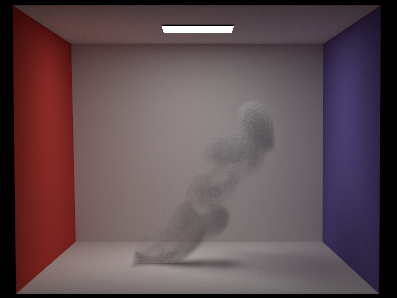
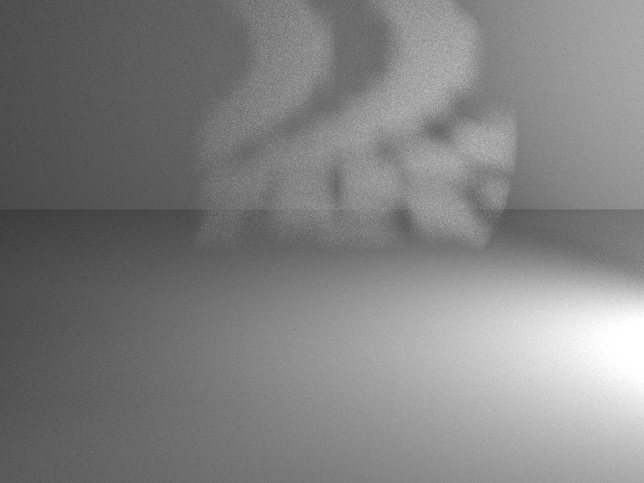
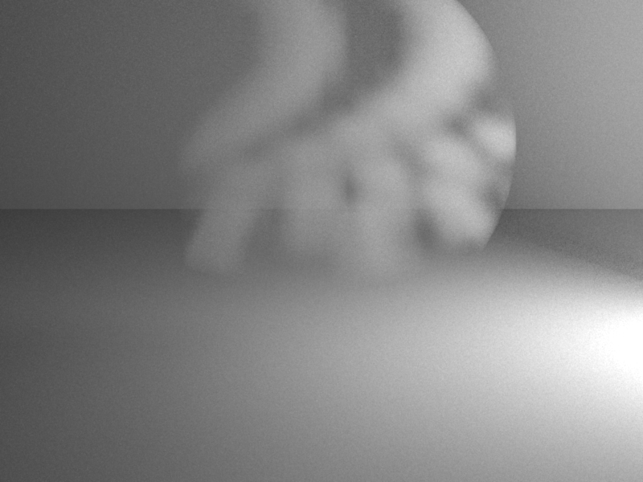

Heterogeneous Participating Medium
Heterogeneous media are often represented as voxel grids. To be able to compare the scene with Mitsuba, I implemented a voxel grid based on Mitsuba's voxel data format. My implementation is similar but not identical, which leads to slight differences in the volume as one can see in the comparison below. I decided to use Delta Tracking instead of Ray Marching, due to the bias of the latter one.
I tried to get the Mitsuba2-vdb-converter (source) to work, to be able to load in any .vdb file. Sadly, I was not able to build it in the end, due to compilation errors on Windows. Therefore, I had to work with some .vol voxel grids that were provided by Mitsuba.


